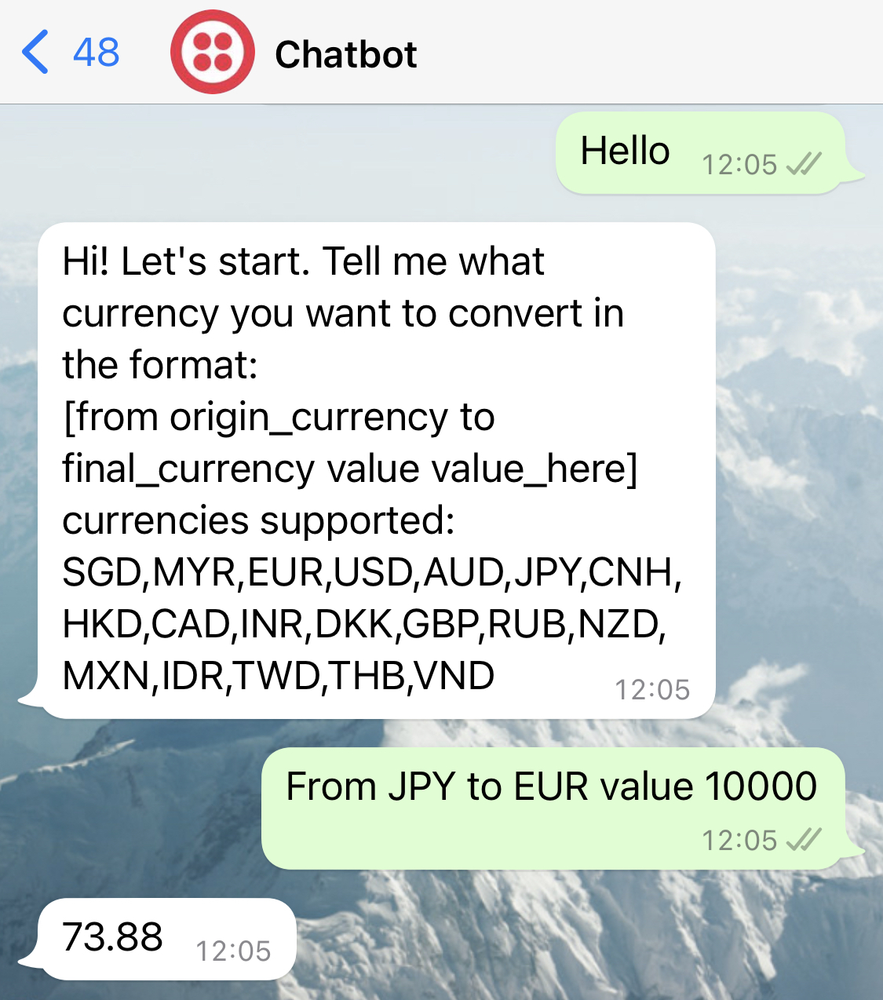
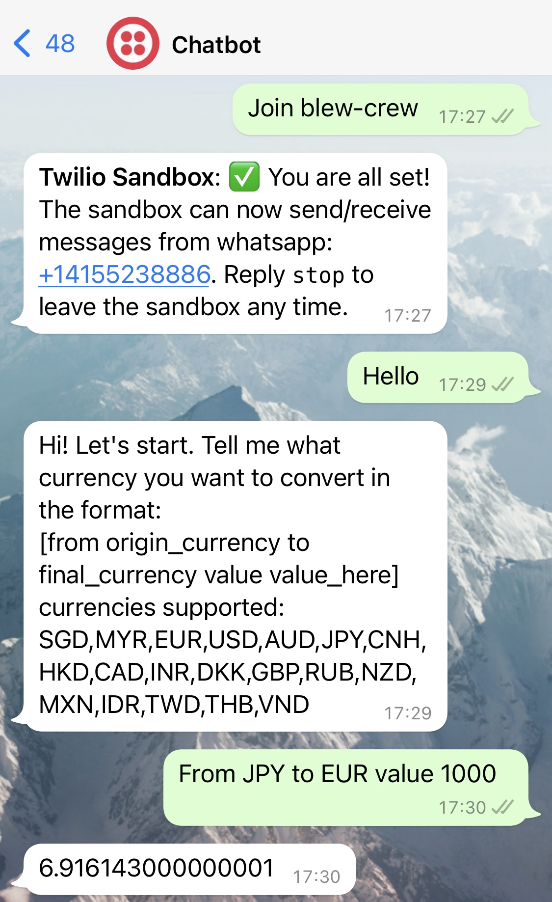
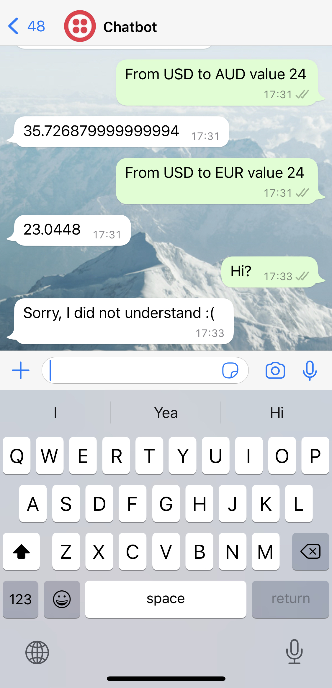

Currency chatbot
Problem/Motivation
As an international student, I have been in many situations where I need to convert one currency from another and it takes some time to open google, look for the conversion, and then finally convert the currency. Since I wanted to get started doing personal projects, I decided to do somthing to address this issue.
Goals
My goal for this project was to have a functional chatbot where a user could ask to convert a currency throught text and obtain the result. These were the specifications:
- User can communicate with bot through text (Imessage/WhatsApp/Telegram, etc.).
- The bot becomes active after user texts "Hello."
- The bot provides clear instructions to the user on how to request currency conversion.
- The chatbot support at least 4 currency exchanges.
Development
I decided to use WhatsApp as the platform to operate my chatbot with since it is the messaging app I use the most. After looking at a couple of tutorials, I learned about Twilio's API which can be used to
send messages to any valid phone number. Thus, I decided to use the API to establish a connection between by WhatsApp and my python script.
While working on that, I used ngrok for local development setting to test my bot.
Once I established a connection with Twilio's API, I wrote the script such that "Hello" was the trigger word and anything different repplied "Sorry, I did not understand :(."
To "hello," the bot repplie with instructions on how to request a currency exchange.
For the currency exchange, I began with four currencies: PEN (peruvian currency), USD, EUR, and CRC (Costa Rica's currency). I hard-coded the conversion using the day's rates.
However, I was not satisfied with this since currencies' exchanges change every day, so my bot could be obsolete the very next day. Because of this, I decided to look for currency APIs. I found one in "RapidAPIs" that supported +15 currencies.
Thus, I shifted from the hard-coding approach to using the API's information. Finally, I deployed my code through Heroku using Github so any person could use it.
Results
I developed a fully functional chatbot that handle +15 chatbot conversions which exceeded my original goals. Moreover, the bot self-updates every day using the API. I invite you to try it out:
- Add the number +1 (415) 523-8886 to your contacts.
- Text "Join blew -rew" (this is only needed the very first time you use it/after you stopped using the chatbot for a long time). You should receive a confirmation message that says that you are all set.
- Text "Hello" (if you already know how to request a currency exchange, you could skip this). The bot will give you instructions on how to request an exchange.
- Request you exchange. Some examples: "From JPY to EUR value 1000," "From USD to AUD value 24"
- Get the conversion!
Here are some pictures:
Full example:
Not valid request:
